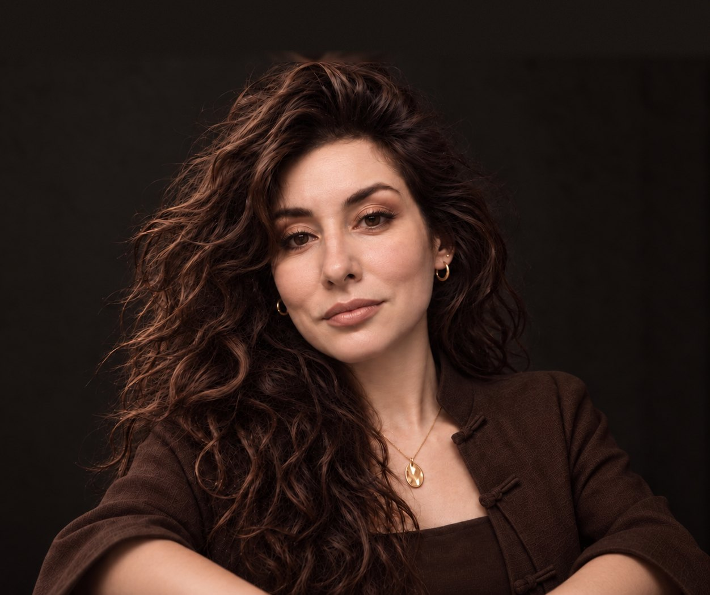

Падма
Обсудить задачу
Падма
Обсудить задачу
Падма
Обсудить задачу
Падма
Обсудить задачу

Ищем руководителей для собственников бизнеса. Финальные интервью с кандидатами проводит основатель бюро — психолог Виктория Головнёва.
Поиск ведут рекрутеры Падмы, обученные методике Виктории. С финалистами встречается она сама: опыт, мотивация, как человек работает с людьми.
Говорим о компании, роли, команде и о том, почему понадобился новый человек.
Фиксируем, кто ведёт проект, критерии, этапы и оплату.
Ищем по своим каналам и на рынке. Первые интервью — рекрутеры.
С кандидатами в руководители встречается Виктория.
Лично основательГотовим вас и кандидата к встрече, помогаем обсудить ожидания и условия.
Договариваемся о первых шагах и о том, когда вместе посмотрим, как идут дела.
Поиск ведём от имени бюро. Название вашей компании кандидатам называем, только когда вы разрешите.
Обсудить задачу →